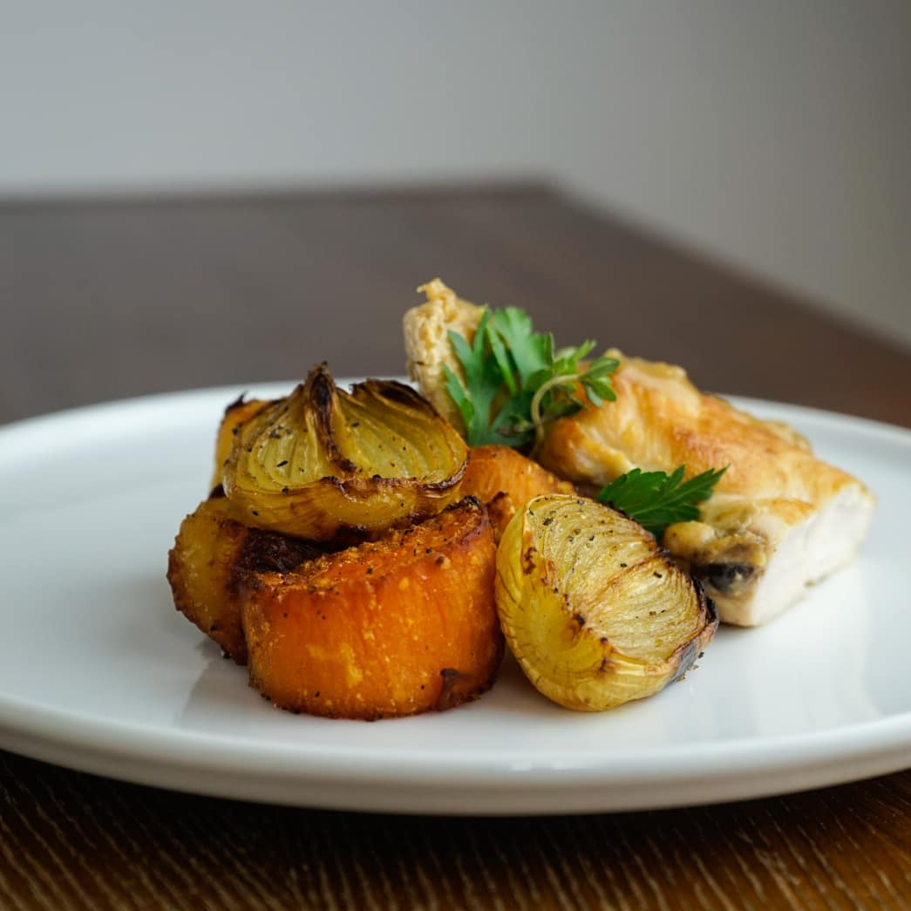

Zelenina podľa @klukuplotny — Normy Jedál
PEČENÁ ZELENINA
.
Na 4 porce potřebujeme:
_________________________________________________
◾2 Batáty
◾4 větší brambory 🥔
◾5 malých cibulí 🧅
◾½ lžíce medu
◾Olivový olej 🫒
◾Sůl🧂
◾Pepř
___________________________________________________
Batáty a brambory oloupeme, nakrájíme je na větší kusy a dáme je vařit do osolené vody na 8 minut.
.
Do mísy dáme trochu pepře, trochu soli, med a 6 lžic oleje. Brambory s batáty přecedíme a dáme je do mísy. K nim přidáme oloupanou a přepůlenou cibuli. Opatrně promícháme, přendáme na pekáč a cibuli řeznou stranu nahoru ještě potřeme trochou oleje. Takto připravenou zeleninu pečeme na 200°C 50-70 minut.
.
Hotovou zeleninu ještě osolíme a podáváme například ke kuřecímu masu.
.
.
.
.
.
#jidlo #vareni #uzasnejedlo #dobrejidlo #jedlo #milujemejidlo #cibule #dnesvarimja #dobrejedlo #dobrejidlo #obed #brambory #zelenina #bataty #med #trouba #peceni #priloha